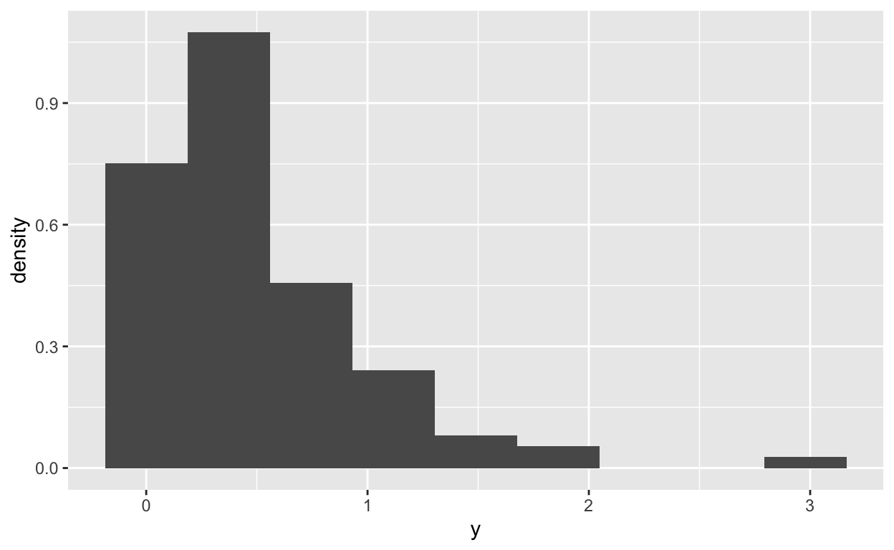
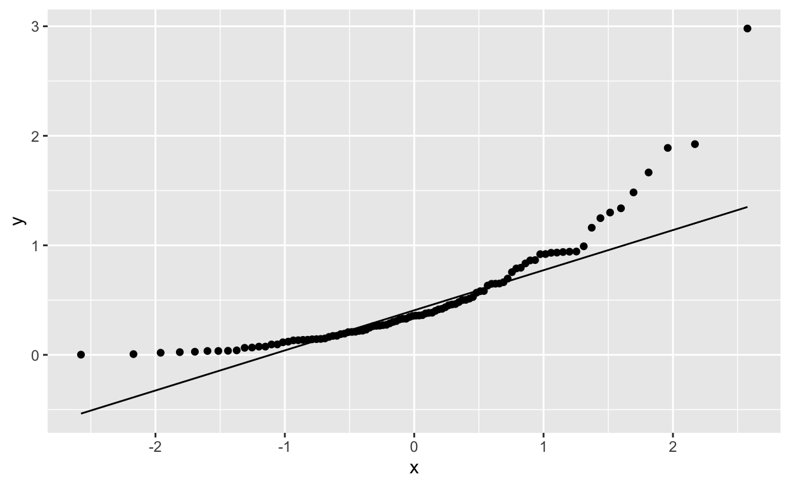
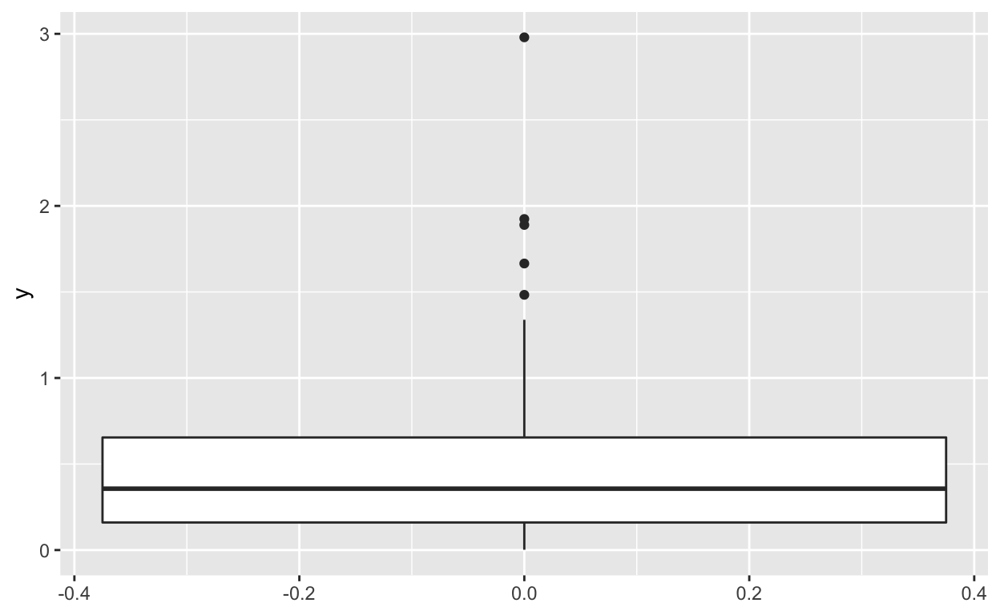
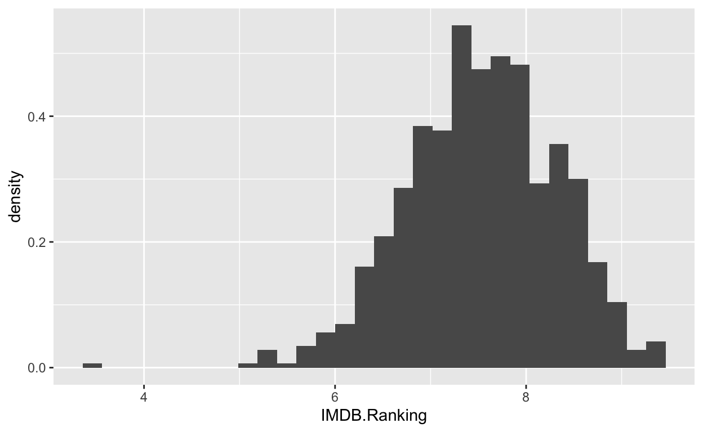
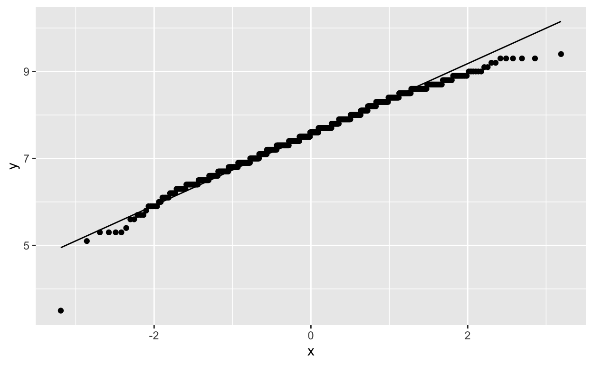
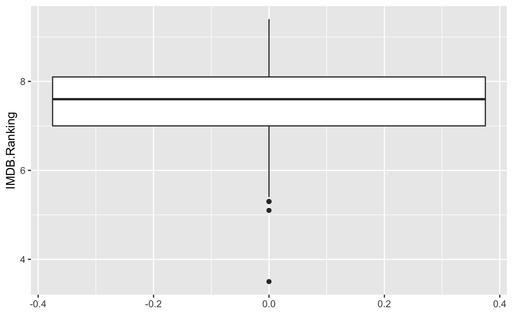
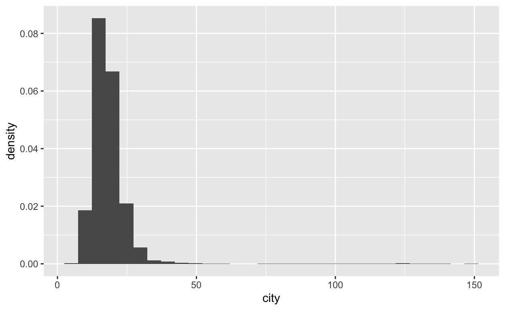
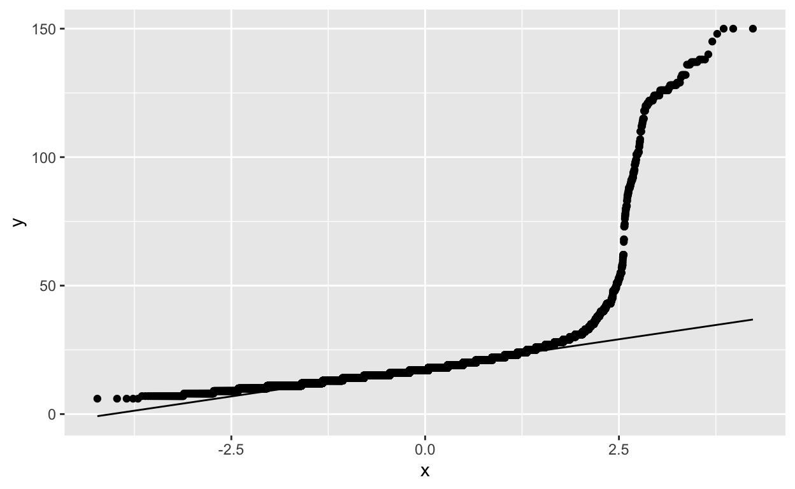
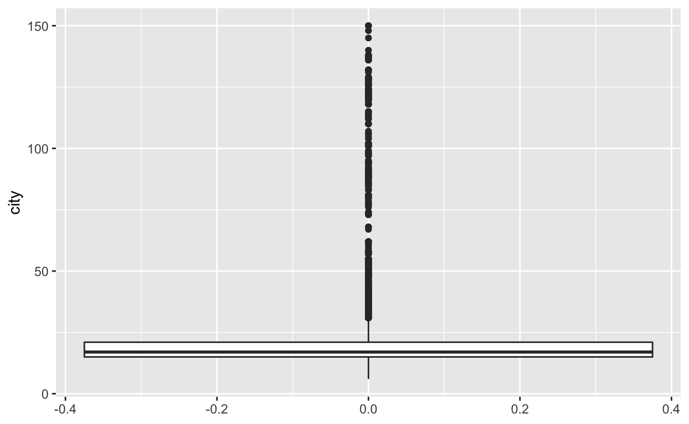

Sampling and Data Collections
The first part of the readings this week deal with concepts of how to sample and collect data, as well as the distinction between observational and experimental data.
Our interest in collecting data is to gain information about population-level characteristics we represent as parameters of the probability distribution.
If a sample is representative of the population then sample statistics or statistics calculated from samples should be good estimates of the population-level parameters.
We assume that observations are well-modelled as random variables. This implies that samples are collections of random values from a population, and that an statistic that is calculated from a sample are also random variables.
Thus we can make probabilistic statements about the sample statistics with respect to the population as a basis for inference.
Observational versus Experimental Data
Experimental Data
The “gold-standard” for the collection of data is the designed experiment, typically as a randomised controlled trial (RCT).
Subjects are selected and then randomly assigned either the treatment or a control (e.g. a placebo) and subjected to identical experimental conditions.
As a result the effects of any other factors that might effect the experimental outcome are “cancelled” out across the treatment and control groups.
Experimental outcomes can be assumed to be causally related to the treatment, i.e. one can infer that the variation is caused by the treatment, not merely correlated.
Data collected in there circumstances is referred to as experimental data.
Observational Data
In cases where it is impractical or impossible to design and conduct an experiment researchers have to rely on observational data collected by observation rather than design.
Example of this include the use of historic data sets (actually all data is historic) like government records.
Observational data are typically much more common and much easier to obtain in comparison to experimental data.
Sampling Methods
There are multiple ways to collect data through sampling, most are based on some form of randomisation which is designed to eliminate potential sources of bias. There are also systematic methods of sampling that can be much more economical and easy to implement, but by their nature are succeptible to bias and erroroneous interpretations.
Simple Random Sampling
Simple random sampling is the most basic approach to sampling data, like the process outlined above for randomised controlled trials, in simple random a sample of size \(n\) sample is constructed by selecting completely at random \(n\) individuals from a population of size \(N>>n\).
Example:
In a study designed to determine students preference for on-line versus in-person workshops QUT randomly selected 300 students and asked them to express their preference. 173 students stated that they preferred in-person workshops, 127 students stated that they preferred on-line workshops.
This is an example of simple random sampling, as students were selected at random without regard to any of their characteristics or behaviours.
Stratified Random Sampling
Stratified random sampling is a more sophisticated method of sampling designed take into account known information about the dempographic characteristics of a non-homogenous population. In stratified random sampling the population is partitioned into discrete non-overlapping strata, and a simple random sample is taken from each stratum. This type of stratification is known as pre-stratification. Post-stratification is when a sample is partitioned in strata post-facto and results can be re-weighted to reflect the dempgraphic makeup of the population.
Example:
According to QUT records approximately 15% of students are international students, 30% of students from are domestic students who live outside the greater Brisbane area, and 55% of students live within the Greater Brisbane Area. In order to improve the accuraccy of the survey in the previous example, students are partitioned into three groups based on where the students live. 100 students are drawn at random from each group and asked their preference for on-line versus in-person workshops.
This is an example of pre-stratificastion, the students are divided into groups before they are sampled.
Cluster Sampling
Cluster sampling is useful in cases where either the unit of analysis is a group of individuals, or access to information about individuals is difficult or impossible to obtain. In cluster sampling simple random sampling is applied to clusters or subsets of a population.
Example:
Researchers are interested in household water usage as it varies over regions and gathering information from individuals households is expensive and time consuming. Instead they use Statistical Local Areas (SLAs) to create clusters of households by geographic regions and sample data from the collection of clusters.
Non-random sampling
There are a variety of systematic or non-random sampling methods. These methods have many caveats attached, but in some cases may be the only option available to gather any information about a population or phenomenon. These methods include \(1\) in \(k\) systematic sampling where a random starting point is chosen for a sequence of observations and every subsequent \(k\)th observation is selected to comprise the sample. Other approaches include quota sampling, and convenience samples which are constrained by either the researchers decision on quota limits, or in the case of conveneince samples, respondent self-selection for participation.
Example:
The User Reviews on IMDB are based on voluntary contributions, that is individuals choose to review shows. This is an example of convenience sampling where respondents self-select thus reviewers are not randomly selected or assigned a show or movie to review.
Explain how this might bias or effect the results of user reviews?
What alternatives could be used to get a more accurate reflection of audience response to a show or movie?
Sampling Distributions and the Central Limit Theorem
Sample statistics as function of random variables are themselves random variables, and the resulting probability distribution of the sample statistic can be derived by several means:
- Mathematical derivation directly from the underlying population probability distribution.
- Heuristic or empirical deduction via numerical simulation where a large number of random samples from a populations are drawn and the empirical probability distribution is derived based on the empirical cumulative probability distribution function.
- Asymptotic approximation, where under certain conditions there are theoretical grounds for inferring certain properties of the sampling distribution.
The Central Limit Theorem (CLT)
The first two methods mentioned above are not as common in practice as the reliance on asymptotic methods which rely in the central limit theorem:
For a sample of size \(n\) the as \(n\rightarrow\infty\) \[ \frac{\sqrt{n}(\bar{x}-\mu)}{\sigma}\stackrel{p}{\rightarrow} N(0,1) \] or as \(n\rightarrow\infty\) we can assume that \[ \bar{x}\sim N\left(\mu,\frac{\sigma^2}{n}\right) \] in order to make probalistic statements about the sample statistic. Notice that under the CLT, the sample mean converges in probability to the population mean, amking it an unbiased estimator of the population mean, but that the standard error of the estimator (SE), \(\sigma/\sqrt{n}\) converges to \(0\).
Example: A dairy produces packages of butter using a machine that is set to produce \(250\) g block of butter with a standard deviation of \(10\) g. A sample of size \(n=13\) blocks of butter produce an average weight of \(\bar{x} = 253\) g. What is the probability of observing a sample average weight of \(253\) g or more?
Set up the solution by hand and useR to compute the probability.
Hint: use
pnorm() to compute the probability, but read the documentation to carefully to be sure it is returning the answer you need.
The probability is \[ Pr(\bar{x}>253) \] which we can convert to a \(Z\)-score and compute \[ Pr(\bar{x}>253)=Pr\left(Z>\frac{\bar{x}-\mu}{\sigma/\sqrt{n}}\right) \] \[ Pr\left(Z>\frac{\bar{x}-\mu}{\sigma/\sqrt{n}}\right)=Pr(Z>1.08) \]
pnorm(1.08,lower.tail = FALSE)
#> [1] 0.1400711Sampling Distribution of a Sample Proportion
The Central Limit Theorem applies to the sample mean, which is often the main characteristic of interest in our research. But often we are interested instead in proportions of the population, and in that case we need to know the sampling distribution of a sample proportion.
Assume that we collect a sample of size \(n\) from a population and let \(x\) be the number of members of that sample that possess some characteristic of interest. Based on the definition of the binomial distribution we can assume that \[ \hat{p}=\frac{x}{n} \] is an estimate of the true proportion of the population \(p\). From that defintion we can write that \[ E(x) = np\qquad\mbox{and}\qquad\mbox{Var}(x) = np(1-p) \] thus from the properties of random variables and the expectation and variance \[ E(\hat{p}) = p\qquad\mbox{and}\qquad\mbox{Var}(\hat{p}) = \frac{p(1-p)}{n}. \] Because \(x\) is the sum of independent Bernoulli trials, then we can apply the central limit theorem to the sample proportion and state that under certain conditions for \(n\) and \(p\) \[ \hat{p}\stackrel{p}{\rightarrow}N\left(p\frac{p(1-p)}{n}\right) \] the rule of thumb for the conditions on \(p\) and \(n\) are that if \(np>5\) and \(n(1-p)>5\) then we can assume that \[ \hat{p}\sim N\left(p,\frac{p(1-p)}{n}\right). \]
Example
Assume that in Semester 2 of a sample of 100 QUT students living in the Greater Brisbane Area, 47 replied that they preferred on-line workshops. Results of previous surveys from Semester 1 indicated that 35% of students preferred on-line workshops. What is the probability of observing the proportion from Semester 2, or more given the Semester 1 results are accurate?Hint: Use the property that the sample proportionis approximately Gaussian; be sure to check the assumptions.
From the data we can see that \[ \begin{align} \hat{p}&=\frac{x}{n}\\ &=\frac{47}{100}\\ &=0.47 \end{align} \] \[ np=(100)(0.47)=47,\mbox{ and }n(1-p)=(100)(0.53)=53 \] So the Gaussian assumption is valid \[ Pr(\hat{p}>p)=Pr(\hat{p}>0.47) \] \[ Pr(\hat{p}>0.47)=Pr\left(Z>\frac{\sqrt{n}(\hat{p}-p)}{\sqrt{p(1-p)}}\right) \] \[ Pr(Z>2.52) \]
pnorm(2.52,lower.tail = FALSE)
#> [1] 0.005867742\[ Pr(Z>2.52)=0.006 \]
Assessing Normality
Assessing normality, or at least some degree of normality in your data is an important task to determine the validity of your results when applying statistical tools of inference based on asymptotic properties of estimators.
Graphically Assessing Normality
There are several tools available for graphically assessing the normality of the data:
- Histograms can be useful for an initial graphical summary of the data that reveals the basic shape of the distribution. If the shape of the histogram deviates too much from a symmetric uni-modal shape, it can be assumed that the normality assumptions are not valid.
- Boxplots can be useful for showing both outliers and can often give a better picture of skew in the data than histograms. Extreme clusters of an excessive number of outliers can be evidence of non-normality.
- Normal Probability Plots are constructed by plotting the sorted data values against their expected \(Z\)-scores. Data from a normal distribution should fall on a straight diagonal line. If the data do not form an approximately straight diagonal line, this is evidence of non-normality.
Example
A sample of size \(n=100\) from an exponential distribution is plotted on a \(q-q\) plot, a histogram and a boxplot,
tmp<-tibble(y = rexp(100,2))
ggplot(tmp,aes(y))+
geom_histogram(aes(y = ..density..),bins = 9)
ggplot(tmp,aes(sample = y))+
stat_qq()+stat_qq_line()
ggplot(tmp,aes(y = y))+
geom_boxplot()
Worksheet Practical Question 1
An automotive battery producer makes a certain model of battery with an average life of 1110 days with a standard deviation of 80 days. Given a sample of size \(n=40\) find the probability that:
- The average battery for the sample is between 1100 and 1110 days
## Answer here!
- The average battery life for the sample is greater than 1120 days
## Answer here!
- The average battery life for the sample is less than 900
## Answer here!
Note that \[ \begin{align} \bar{x}&\sim N(1100,80^2)\\ n&=40\\ \operatorname{E}(\bar{x})&=1100\\ \operatorname{Var}(\bar{x})=\frac{80^2}{40}=160 \end{align} \] \[ \begin{align} Pr(1100<\bar{x}<1110)&=Pr\left(\frac{1100-\mu}{\sigma/\sqrt{n}}< \frac{\bar{x}-\mu}{\sigma/\sqrt{n}}< \frac{1110-\mu}{\sigma/\sqrt{n}} \right)\\ &=Pr\left(\frac{1100-1110}{80/\sqrt{40}}< Z< \frac{1110-1110}{80/\sqrt{40}}\right)\\ &=Pr\left(0<Z< 0.7905694 \right)\\ &=Pr(Z< 0.7905694 )-Pr(Z<0) \end{align} \]
Z <- 10/(80/sqrt(40))
pnorm(Z)-pnorm(0)
#> [1] 0.2854023\[ \begin{align} Pr(\bar{x}>1120)&=Pr\left(\frac{\bar{x}-\mu}{\sigma/\sqrt{n}}>\frac{1120-\mu}{\sigma/\sqrt{n}}\right)\\ &=Pr\left(Z>\frac{1120-1110}{80/\sqrt{40}}\right)\\ &=Pr(Z> `r (1120-1110)/(80/sqrt{40})) \end{align} \]
Z <- (1120-1100)/(80/sqrt(40))
pnorm(Z, lower.tail = FALSE)
#> [1] 0.05692315\[ \begin{align} Pr(\bar{x}<900)&=Pr\left(\frac{\bar{x}-\mu}{\sigma/\sqrt{n}}< \frac{900-\mu}{\sigma/\sqrt{n}} \right)\\ &=Pr\left(Z<\frac{900-1110}{80/\sqrt{40}} \right)\\ &=P(Z< -16.6019577 ) \end{align} \]
Z <- (900-1110)/(80/sqrt(40))
pnorm(Z)
#> [1] 3.372724e-62Worksheet Practical Question 2
Load the episodes data and find the overall proportion of episodes that pass the Bechdel-Wallace test, and the proportion of Star Trek: The Next Generation episodes that pass the Bechdel-Wallace test.
What is the probability that the sample proportion of \(n=30\) Star Trek: The Next Generation episodes that pass the Bechdel-Wallace test is less than the average for all series?
data(episodes)
data(episodes)
## Proportion of all episodes that pass
summarise(episodes,pass = mean(Bechdel.Wallace.Test))
## Proportion of TNG episodes that pass
filter(episodes, Series=="TNG")%>%summarise(pass = mean(Bechdel.Wallace.Test))We can see that \[ \hat{p}\sim N\left(p,\frac{p(1-p)}{n}\right) \] where \(p = 0.438\). The question is \[ \begin{align} Pr(\hat{p}<0.52)&=Pr\left(\frac{\hat{p}-p}{\sqrt{p(1-p)/n}}<\frac{0.52-p}{\sqrt{p(1-p)/n}} \right)\\ &=Pr\left(\frac{\hat{p}-0.438}{\sqrt{(0.438)(1-0.438)/30}}<\frac{0.52-0.438}{\sqrt{(0.438)(1-0.438)/30}} \right)\\ &=Pr\left(Z<\frac{0.082}{0.091} \right)\\ &=Pr\left(Z<0.91\right) \end{align} \]
pnorm(0.91)
#> [1] 0.8185887Worksheet Practical Question 3
Load the data filesepa_data and episodes and create \(q-q\) plots, histograms, and boxplots for the variables city from epa_data and IMDB.Ranking from episodes.
data(epa_data)
data(episodes)
Do either of these variables appear to be Gaussian? If not what distributions do they resemble (if any) from the previous examples?
data(episodes)
data(epa_data)
### episodes data
ggplot(episodes,aes(x = IMDB.Ranking))+
geom_histogram(aes(y = ..density..))
#> `stat_bin()` using `bins = 30`. Pick better value with `binwidth`.
ggplot(episodes,aes(sample = IMDB.Ranking))+
stat_qq()+stat_qq_line()
ggplot(episodes,aes(y = IMDB.Ranking))+
geom_boxplot()
### epa_data
ggplot(epa_data,aes(x = city))+
geom_histogram(aes(y = ..density..))
#> `stat_bin()` using `bins = 30`. Pick better value with `binwidth`.
ggplot(epa_data,aes(sample = city))+
stat_qq()+stat_qq_line()
ggplot(epa_data,aes(y = city))+
geom_boxplot()